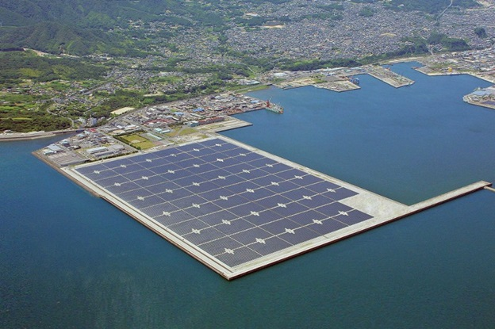

The floating solar panel technology is based on exploiting the water surface to install the panels,
as they can be installed over ponds, ponds, lakes, canals and other fixed water bodies.
The panels are also repositioned to stay facing the sun, which can enhance efficiency and increase production.
So floating solar panels are the new reliable and cost-effective solution to converting water bodies into solar power plants while conserving land and water.
Where floating solar energy systems can represent a serious alternative to solar systems installed on land.
